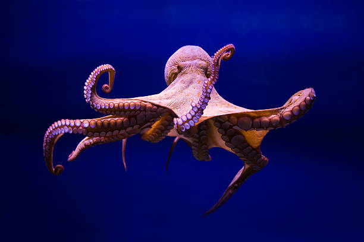
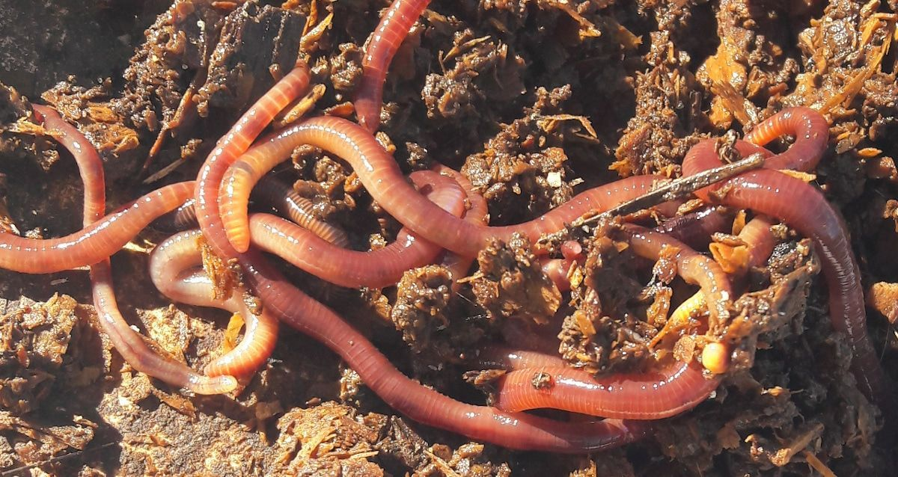
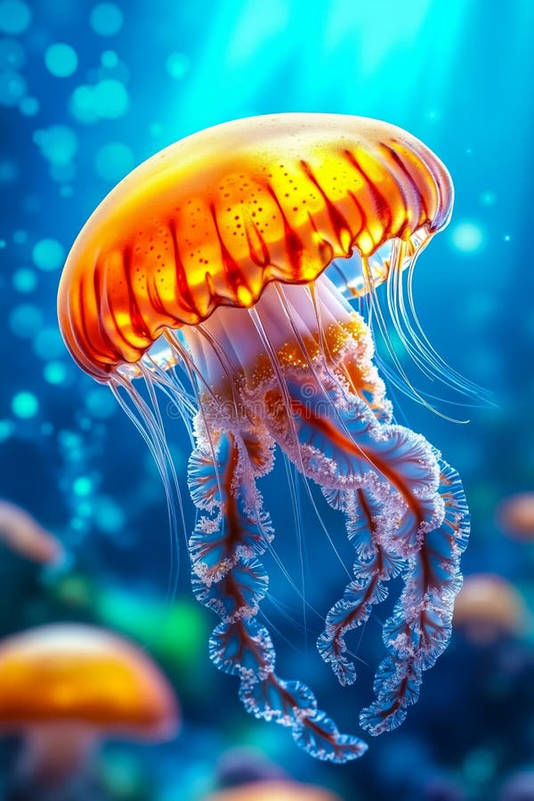
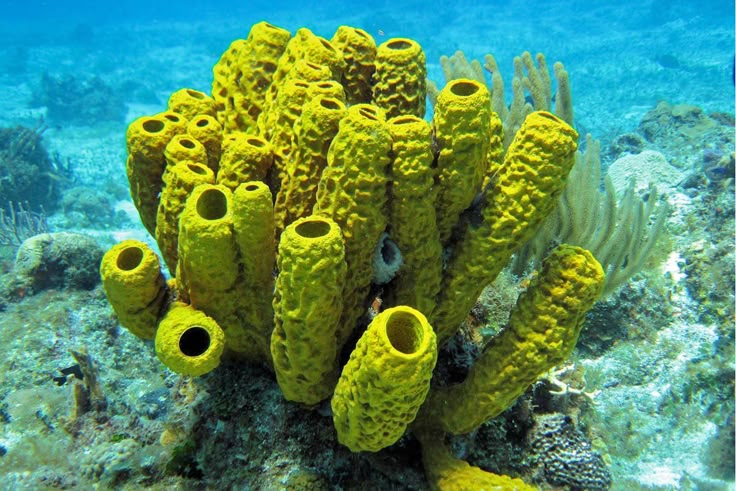

Artrópodos
Animales que habitan en ambientes terrestres y acuáticos. Dominan casi todos los ecosistemas del planeta: en la tierra (bosques, desiertos, ciudades) y en el agua (océanos, ríos, lagos).
Los animales invertebrados son aquellos que carecen de columna vertebral y esqueleto interno articulado. Representan aproximadamente el 95% de todas las especies animales conocidas y se agrupan en 6 grupos principales: Artrópodos, Moluscos, Equinodermos, Anélidos, Cnidarios y Poríferos. ¡Descubre sus características y sus grupos!
Animales que habitan en ambientes terrestres y acuáticos. Dominan casi todos los ecosistemas del planeta: en la tierra (bosques, desiertos, ciudades) y en el agua (océanos, ríos, lagos).

Son animales que poseen un cuerpo blando y generalmente no segmentado. Muchos están protegidos por una concha calcárea (como el caracol), mientras que otros carecen de ella (como el pulpo).

Animales que se caracterizan por su piel cubierta de espinas o placas calcáreas. Habitan en el fondo del océano y poseen una simetría radial (divididos en 5 partes).

Son un filo de animales caracterizados por tener el cuerpo blando, alargado, cilíndrico y dividido externamente en anillos o segmentos (metámeros).

Animales acuáticos (principalmente marinos) que carecen de columna vertebral y se caracterizan por poseer tentáculos con células urticantes (capaces de inyectar veneno) para cazar.

Son los animales más simples que existen; carecen de tejidos, órganos, boca o sistema digestivo, filtrando el agua para alimentarse.
Los invertebrados son un grupo de animales muy diversos, que habitan todo tipo de ecosistemas. Suelen ser de menor tamaño que los grandes animales vertebrados, terrestres o acuáticos. Aunque carecen de esqueleto, algunos animales invertebrados cuentan con un exoesqueleto (como los cascarudos) o un caparazón resistente (como las almejas).